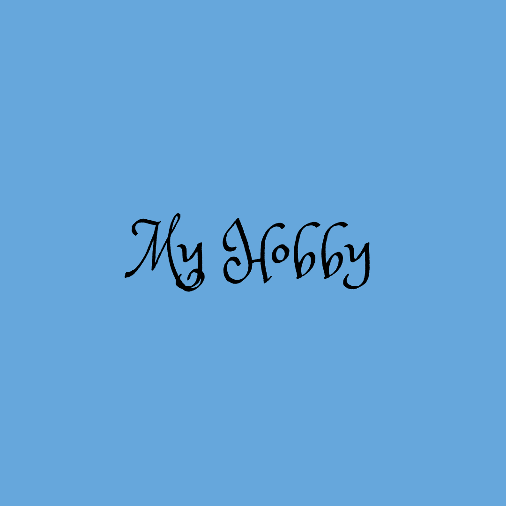

|  | |
|
Ini adalah beberapa hasil karya yang telah saya kerjakan selama saya sekolah dan di saat saya sedang minat untuk menggambar. Memang sejak kecil saya senang menggambar dan mewarnai. Pernah pula, saya mengikuti beberapa perlombaan saat SD. |
|
5D Planner adalah salah satu web yang saya pelajari di saat SMA. 5D Planner ini dapat digunakan untuk membuat desain suatu ruangan. Mampu memperlihatkan baik dari 2D ataupun 3D. |
Clara.io adalah salah satu web yang diajarkan saat saya SMA. Menurut saya sendiri, web ini mampu memperlihatkan suatu objek 3D menjadi 2D (memperlihatkan cara pandang dari depan, samping, dan atas). Dan itulah, beberapa hasil karya tugas saya selama menggunakan web Clara.io. |
|
Stop Motion juga merupakan hal yang pernah saya pelajari saat saya SMA. Stop Motion ini merupakan aplikasi yang digunakan untuk membuat animasi dari potongan-potongan gambar yang saat digabungkan akan menunjukkan gerakan tertentu. Dari yang telah ditonton, itu merupakan salah satu tugas sederhana saya. Bagi saya aplikasi ini, cukup sulit karena memerlukan objek fisik dengan berbagai gerakan yang mampu berubah gerakan karena itu mudah menggunakan clay.
|
| NEXT |